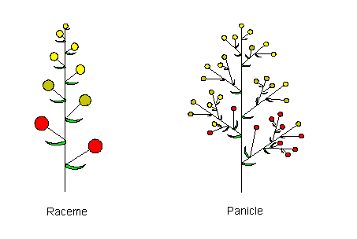

Raceme.
An inflorescence consisting of a main axis, bearing single flowers alternately or spirally on stalks (pedicels) of approximately equal length. The apical growing point continues to be active so there is usually no ternminal flower and the youngest branches or flowers are nearest the apex. This mode of growth is known as monopodial